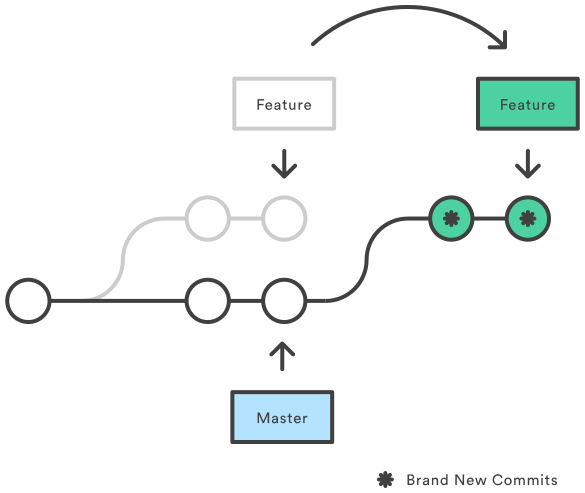
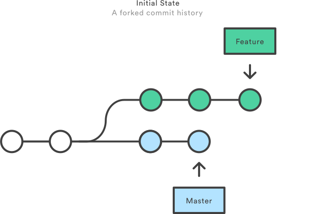
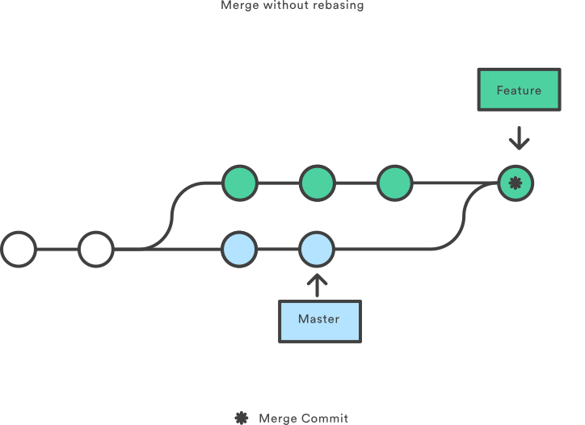
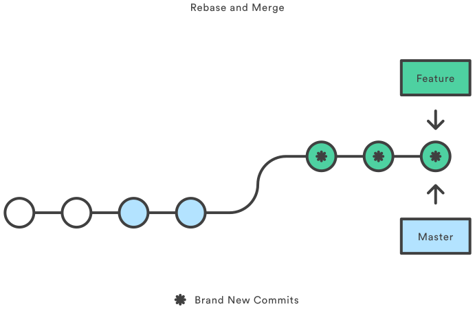
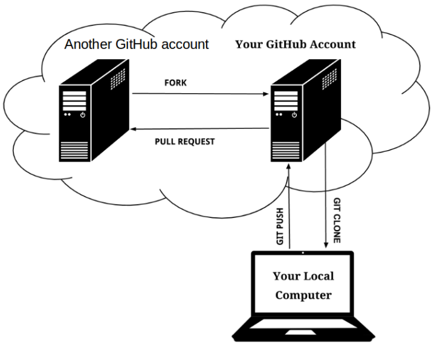

Version control with Git and GitHub
Gerard Capes
Version control with Git and GitHub
- Please sit near the front
- Open the notes at http://gcapes.github.io/git-course/
- Sign up for a GitHub account
- Attendance is recorded using a feedback form; there is no sign-in sheet
- You can use Windows or Linux on the training PCs
Research-related IT services
- Described on IT Services website
- Announcements given via Research IT News
- Training courses teaching computing skills for Research
- General guidance and advice about research software
- Access to specialist support and consultancy e.g. code reviews
- Access to HPC systems
- Full list of services on offer
- For help and support, use the Support Portal
Housekeeping
- Fire exit
- Toilets
- Course timing
- 09:30 – 12:00 Morning session
- 12:00 – 13:00 Lunch
- 13:00 – 16:00 Afternoon session
Teaching methods
- Interactive, workshop-style course
- Code along with the examples
- Test your understanding in the exercises
- Course notes
- All examples and exercises are in the notes
- Slides will remain online after the course
Getting help
- Sticky notes
- Used for getting help and giving real-time feedback
- Green = OK, ready to continue
- Red = too fast, don’t understand, computer says no etc
- Please interrupt me to ask questions
- Peer learning
- During exercises, please help each other as required
- Please try to be quiet during worked examples so everyone can hear
What is a version control system?
- Version control is a piece of software which allows you to record and preserve the history of changes made to directories and files.
- If you mess things up, you can retrieve an earlier version of your project.

Storing versions without VCS
- Save a copy elsewhere?
- Save with a different name?
- How do you name different versions?
- What’s different between them?
- Many of copies of nearly-identical but critically different files.

Why use version control
To store versions properly
- VCS treats files as one project - one current version on disk, previous versions and variations are saved in a repository
- VCS starts with a base version of the project, and only saves the subsequent changes you make
- In order to save a new revision, a commit message is required, which explains why the changes were made.
Changes are saved sequentially

Different versions can be saved

Multiple versions can be merged

Why use version control?
- Restore previous versions
- Understand what happened
- Backup
- Collaboration
Before we get started
- Example scenario
- Text files vs binary files
- Git vs GitHub
Open the notes
https://gcapes.github.io/git-course
Why learn the commands?

The staging area

Checking out a previous commit: “detached HEAD”

Exercise 1
Create your own repo
Branches

Three exercises on branching
Revert
Create a new commit

Reset
Delete commit(s)

Exercises on remote collaboration
https://gcapes.github.io/git-course/09-remote-collaboration
Feedback form = attendance record
Rebasing

Merge vs rebase

Standard merge

Rebase onto master

(FF) merge after rebase

Forks and Pull Requests

Send me a PR!
http://gcapes.github.io/git-course/11-pull-requests/#exercise